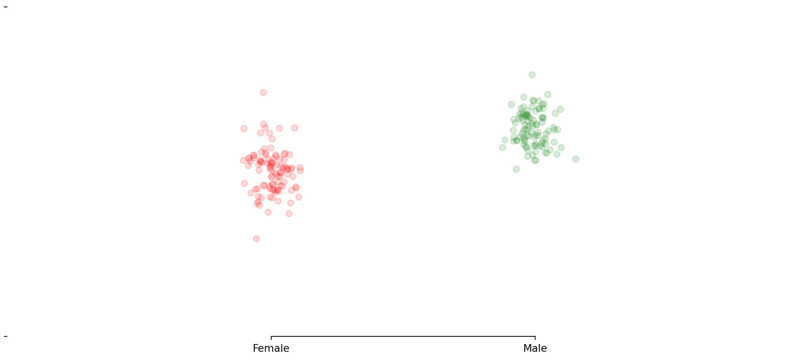
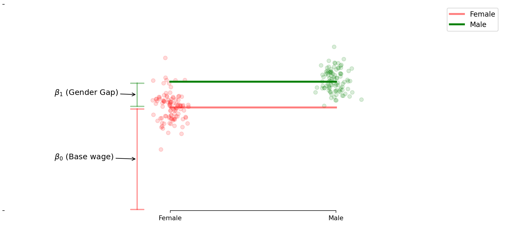
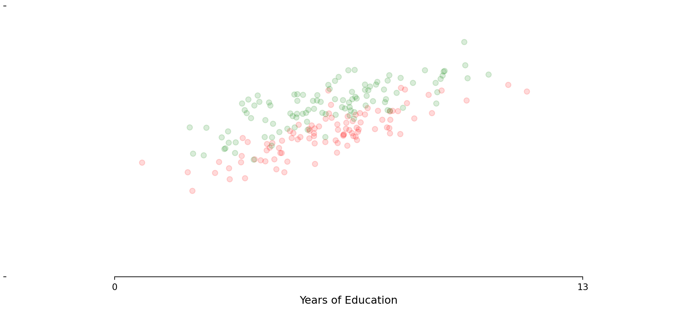
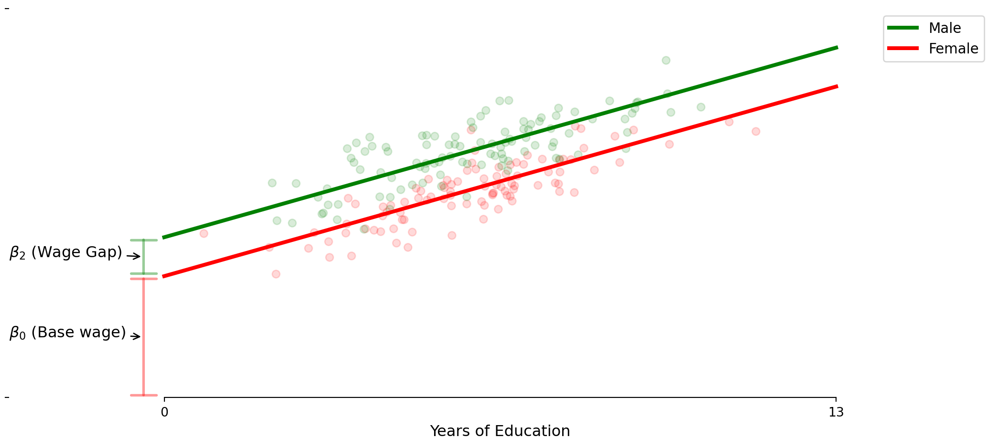
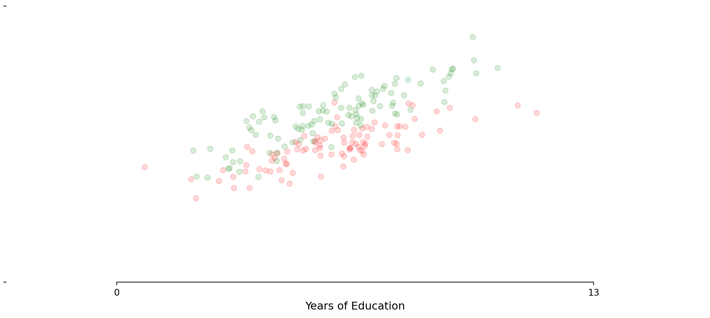
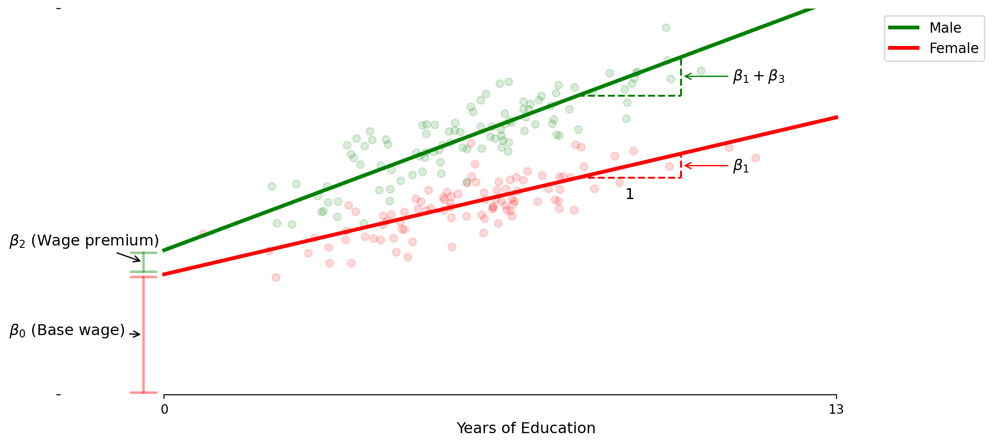

ECON 0150 | Economic Data Analysis
The economist’s data analysis skillset.
Part 5.1 | Categorical Controls
GLM: The Gender Wage Gap
Lets use the general linear model to test for differences in wages by gender.
Questions:
- Is there a wage gap between male / female?
- Are returns to education different between male / female?
Model 1: Basic Gender Wage Gap
The simplest model with just a gender indicator.
Model 1: Basic Gender Wage Gap
The simplest model with just a gender indicator.

\[\text{Wage} = \beta_0 + \beta_1 \times \text{Male} + \varepsilon\]
Model 1: Basic Gender Wage Gap
The simplest model with just a gender indicator.
\[\text{Wage} = \beta_0 + \beta_1 \times \text{Male} + \varepsilon\]
- β₀ is the average wage for females
- β₁ represents the gender wage gap - the additional wage for males
- We often call a Categorical Control variable like this a “Fixed Effect”
Model 1: The Code
Implementing the basic gender gap model
import statsmodels.formula.api as smf
# Fit the model with just the male indicator
model1 = smf.ols('INCLOG10 ~ MALE', data=data).fit()
print(model1.summary().tables[1])- If β₁ > 0, this is evidence of a difference in income by gender
- There are many possible explainations for this gap
- What if the gap is related to some other factor (eg. education)?
Model 2: Education + Gender Wage Gap
Adding education as a control variable.

Model 2: Education + Gender Wage Gap
Adding education as a control variable.

Model 2: Education + Gender Wage Gap
Adding education as a control variable.

\[\text{Wage} = \beta_0 + \beta_1 \times \text{Education} + \beta_2 \times \text{Male} + \varepsilon\]
Model 2: Education + Gender Wage Gap
Adding education as a control variable.
\[\text{Wage} = \beta_0 + \beta_1 \times \text{Education} + \beta_2 \times \text{Male} + \varepsilon\]
> β₀ is the base wage for those with no post-middle school education
> β₂ represents the gender wage gap - added to the intercept for males only
> model assumes parallel lines - same returns to education (β₁) for everyone
Model 2: The Code
Implementing the gender fixed effect model
import statsmodels.formula.api as smf
# Fit the model with male indicator
model2 = smf.ols('INCLOG10 ~ EDU + MALE', data=data).fit()
print(model2.summary().tables[1])- If β₂ > 0, there is evidence of a gender wage gap.
ECON 0150 | Economic Data Analysis
The economist’s data analysis skillset.
Part 5.2 | Interaction Models
Model 3: Different Returns to Education
What if education benefits genders differently?

Model 3: Different Returns to Education
What if education benefits genders differently?

\[\text{Wage} = \beta_0 + \beta_1 \times \text{Education} + \beta_2 \times \text{Education} \times \text{Male} + \varepsilon\]
Model 3: Different Returns to Education
What if education benefits genders differently?
\[\text{Wage} = \beta_0 + \beta_1 \times \text{Education} + \beta_2 \times \text{Education} \times \text{Male} + \varepsilon\]
- β₁ represents the female return to education.
- β₂ represents the additional male return to education - this changes the slope
- Male education effect is β₁ + β₂, creating diverging wage paths
Model 3: The Code
Implementing the education-gender interaction model
# Fit model with interaction between education and sex
model3 = smf.ols('INCLOG10 ~ EDU + EDU:MALE', data=data).fit()
print(model3.summary().tables[1])- If β₂ > 0 and significant, male return to education is higher
- This model assumes same baseline (intercept) for both genders
Model 4: Full Gender Difference Model
Combining fixed effects and interactions

\[\text{Wage} = \beta_0 + \beta_1 \times \text{Education} + \beta_2 \times \text{Male} + \beta_3 \times \text{Education} \times \text{Male} + \varepsilon\]
Model 4: Full Gender Difference Model
Combining fixed effects and interactions
\[\text{Wage} = \beta_0 + \beta_1 \times \text{Education} + \beta_2 \times \text{Male} + \beta_3 \times \text{Education} \times \text{Male} + \varepsilon\]
- β₀ = base wage
- β₂ = initial wage gap (at zero education)
- β₁ = female returns to education
- β₃ = male education return premium
Model 4: The Code
Implementing the full gender difference model
# Fit full model with both sex indicator and interaction
model4 = smf.ols('INCLOG10 ~ EDU + MALE + EDU:MALE', data=data).fit()
print(model4.summary().tables[1])> allows for differences in both baseline wages and educational returns
Comparison of Models
Different models answer different questions
Model 1: Fixed Effect
- Question: “Is there a gender wage gap?”
Model 2: Fixed Effect with Control
- Question: “Is there a gender wage gap controling for education?”
Model 3: Interaction Only
- Question: “Are there differences in returns to education?”
Model 4: Fixed Effect and Interaction
- Question: “Does the gender wage gap vary with education level?”
Key Takeaways
General linear model for analyzing group differences
Part 5.1 | Categorical Controls (‘Fixed Effects’)
- Captures level differences between groups
Part 5.2 | Interactions
- Capture differences in slopes
Model Choice should be guided by your research question